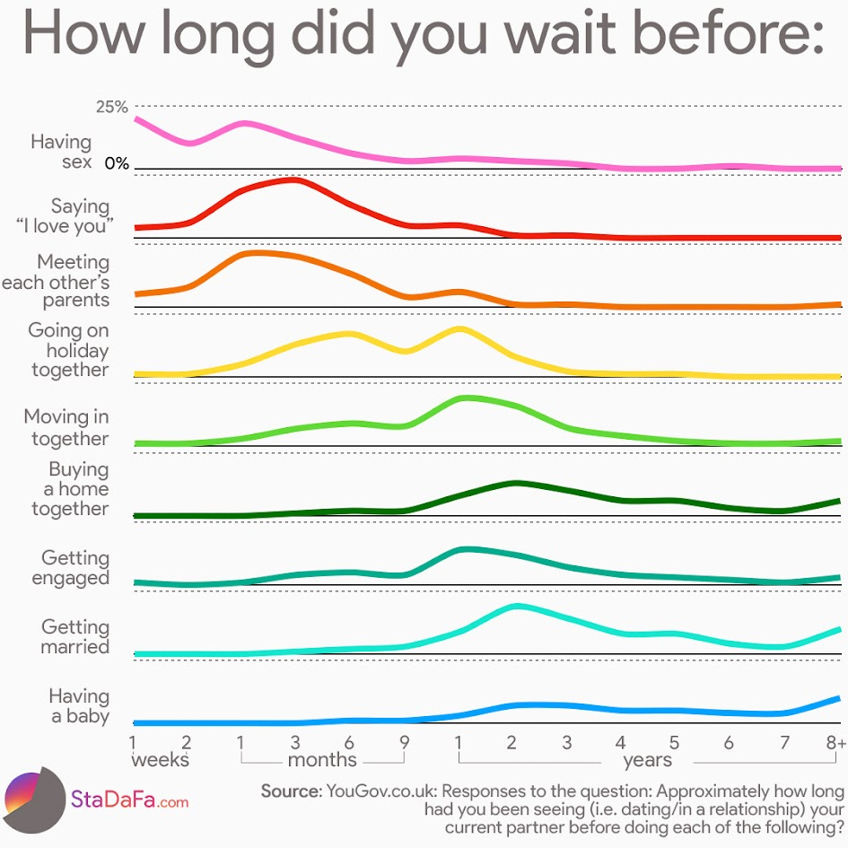

With this assignment, we were tasked with finding a problematic visualization
somewhere online, and using vega-lite to create a new version that addresses problems with the original version. The source data for the 'problem'
chart and my redesign can be found at yougov.com
To start, I found the chart below that I found to be visually unappealing, exhibiting several problematic characteristics of a good data visualization.
This chart was found on Reddit at Reddit.com/r/dataisugly:

I primarily found this chart to be "less than ideal" as it tries to convey too much information without certain datapoints at all. It breaks each milestone into
it's own line graph, which could be fine if done correctly - serving a similar purpose to something like a ridgeline graph by showing comparisons of when milestone
events occur over time - but it then relies on strange date scaling on the x-axis to convey survey responses ranging from weeks, to months, and then to years.
I also found the 0-25% y-axis to be a bit claustrophobic in the image, having 9 charts stacked means each one has very little vertical range, so the scaling from 0 to 25
happens very quickly, making it hard to identify any given data point by percentage against time.
To fix this chart, I first identified a problem with the source data that became more evident after seeing the raw numbers - the number of responses for each question did
not appear to sum to 100%, I assumed because they excluded certain survey responses like "N/A" or "Don't wish to answer". Realizing this, I scaled each data point to it's
overall proportion for that question, so each milestone summed to 100%. I played around with plotting this data in a few styles, including a stacked line chart or a ridgeline
graph, but settled on a heatmap for this data. My reworked chart is below:
I like this heatmap compared to the original because it allows the user to see the 'progression' of these relationship milestones cleanly over time, but
also provides easy to see numeric data for any given point. When playing around with other options, the stacked line chart felt problematic as too much of the
data overlapped in certain areas, while the ridgeline looked nice but didn't provide the numeric data as clean as I wanted. This heatmap felt like it solved both
of those issues in an optimal way, showing both the relationship trends over time, while also providing explicit numerical data.